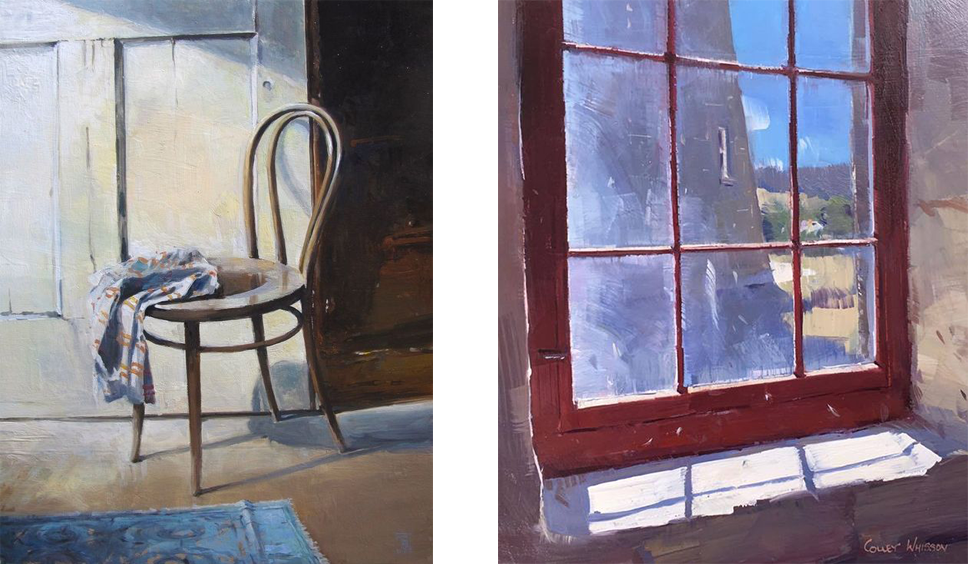
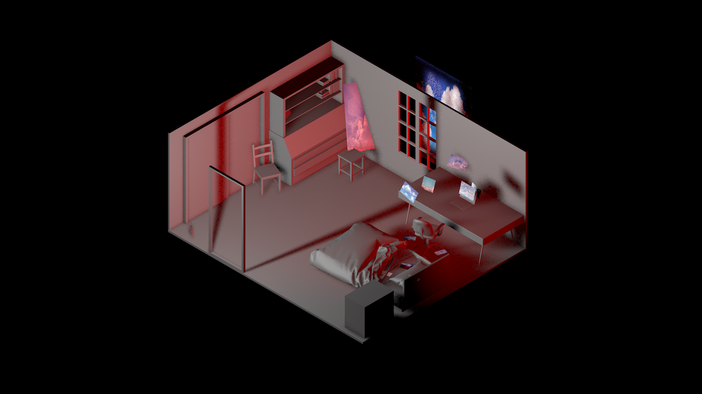
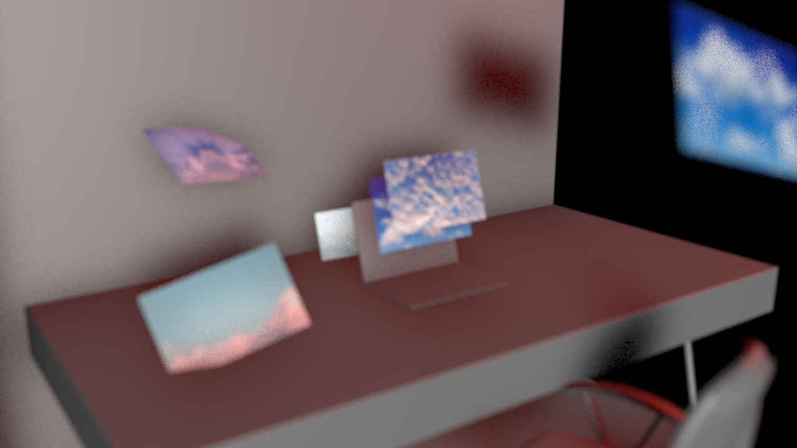
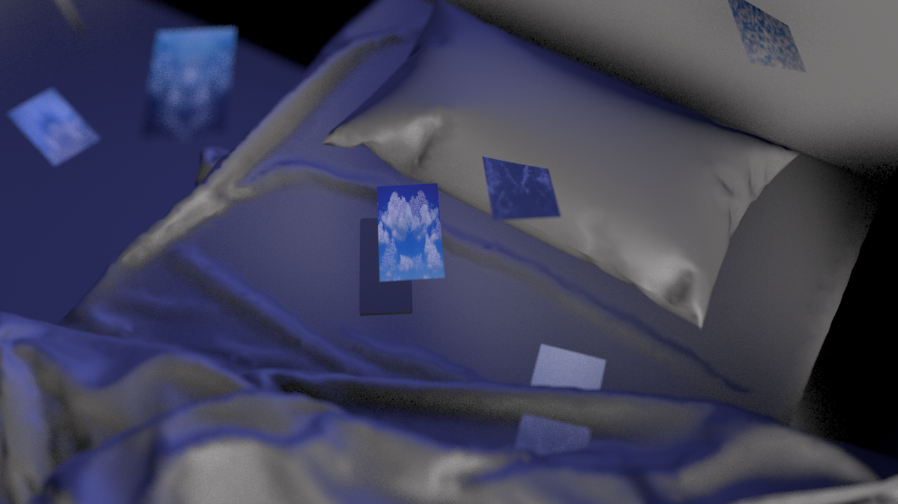
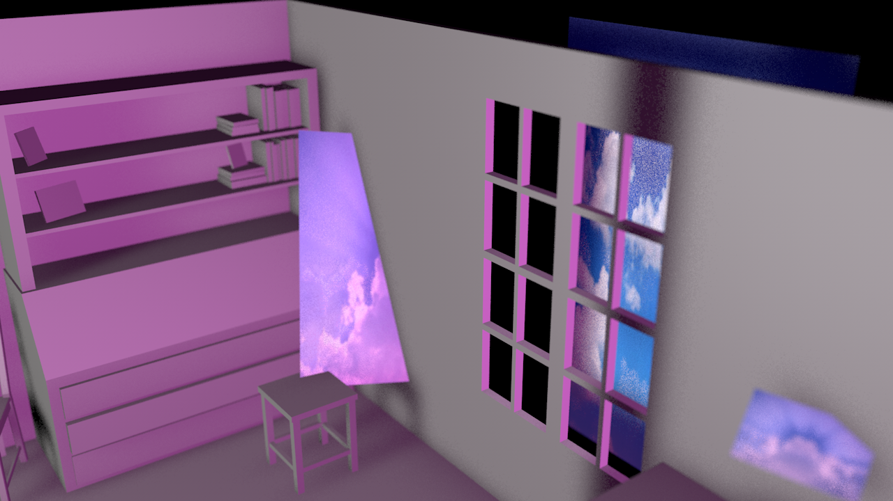
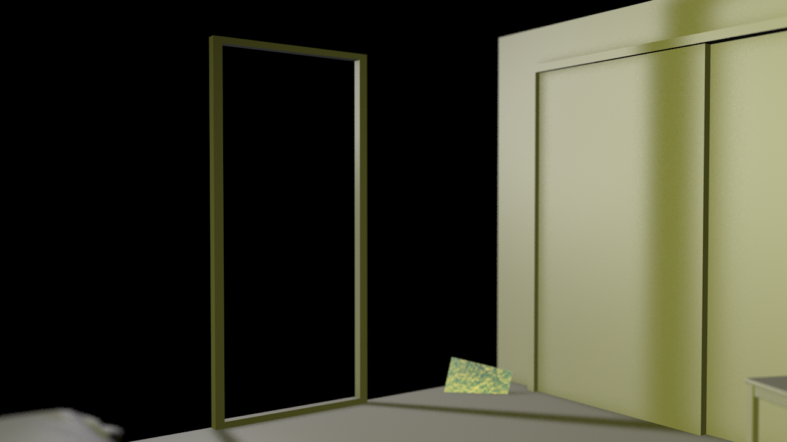
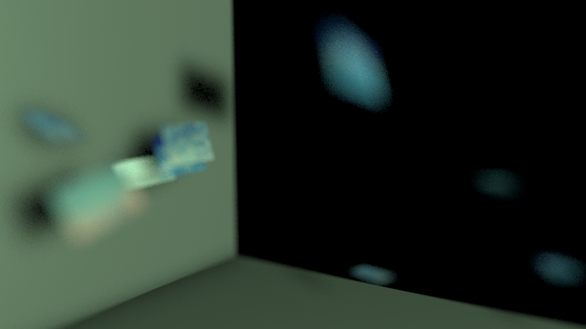
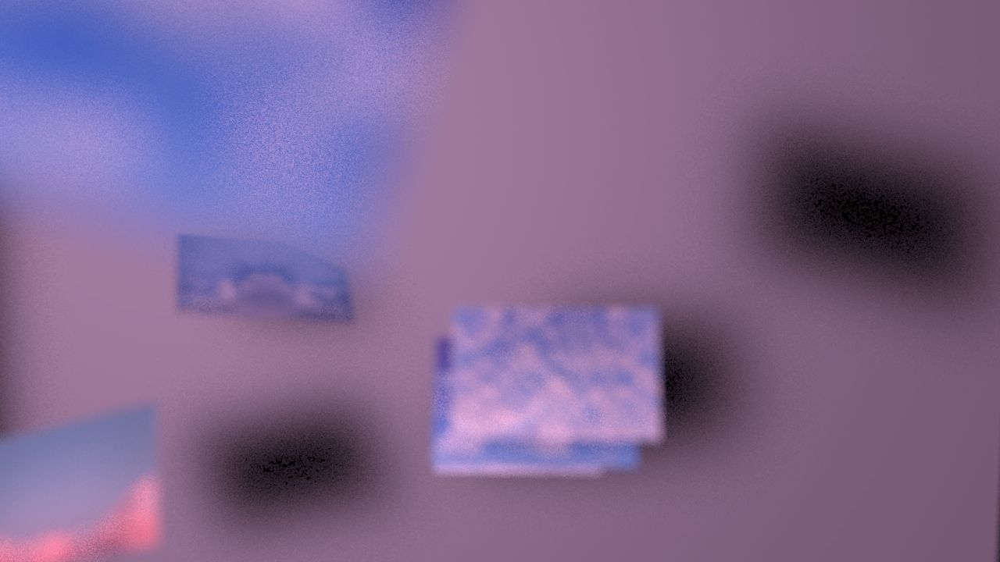

We don’t have many answers. We don’t even know when it will end. Today I felt like I was sinking, most days I feel like that.
This situation—the pandemic—makes us feel like ‘normal life’ is on pause. Anguish, anxiety, apocalyptic dreams, alternative realities, boredom, mind ghosts and uncertainties. I miss the walks by the park, the evenings at the theaters, those days I end up daydreaming under the sun, the roads that I saw daily while on the bus, but mostly the way those things, more than I imagined, fed me creatively as a designer that I am.
The way this crisis obligates us to see our life and the little things within it in other new ways, and thinking about the true meaning of society and democracy, is fascinating and at the same time full of uncertainties. Before analyzing the global cultural and social context, we need to understand our innermost issue – soaking our minds in emotions.
Usually I don’t express myself in the best way I can, so I choose a song whose lyrics represent the empty space that I have between my mind and heart. Because for me there isn’t a better way to describe what's on my mind. There’s this thing in this song, that takes prominence and surely makes us think: the elliptical ‘well...’. In Alone, Omen 3 (Man Alive!, 2020) this expression is an element of uncertainty, undermining our thoughts and reassurances but apart from that, King Krule’s poem tells us that there’s nothing wrong with feeling like we do, for time will heal everything, as we are “the omen of paradise”.

Khora – a radical otherness that gives place to being.
Spatiality as a concept was always attached to some sort of controversy. Coming up with a definition for a dimension that pertains to all aspects of being and existing in a terrain setting is not a consensual task that ends up in unanimous agreement, and it may never will.
Space embeds a multitude of dimensions, it exists in a relational structure with time, position, objects and it forms a network among all things physical, material and relative. It is the distinction of separation between things, it positions them in the physical realm and it spreads them and us, beings, in a chronological setting with a vague and loose sense of linear familiarity. Space is the foundation of the framework in which all the universe, and thus life, is composed. It is the essence of the realm of physicality and of the material and concrete, and although a consensus on what space really is and where it belongs in a conceptual framework most likely will never be reached, there was never a more appropriate time than now to open up this discussion.
Physical space is the validation of one’s life. Your existence is proven through spatiality, and your persona and lifetime is engraved in the physical demonstration of space. And when we view space as something so essential for life to happen, it’s hard to imagine going through its loss.
The loss of a physical dimension happens in very few instances, it usually implies an individual experience and a social and political motive behind it, such as seeking asylum or prisional incarceration. But in the reality we encounter ourselves in now, the world has lost its space collectively, and thus its contact with the physical realm. This spatial network between the relationship of all things that surround us that we have grown so used to and thought it would only expand—and never contract—has shrunk massively. No one ever thinks about losing physical space, because its topology renders it as something that is forever imprinted on earth—and you can’t lose eternity. When you feel entitled to eternity, there just isn’t an easy nor a fathomable approach to disintegrating yourself from most of the physical realm, to reduce the structure of space, time and position into a portion of itself.
But disintegration is necessary, there is no way around it and as there isn’t a timeframe from this phenomenon to occur in, the concept of physical spatiality is bent and broken becoming a shell of itself, with its presence becoming more and more suffocating—the elephant in the room so to speak, if there was any space left for it to fit in.
There is an urgency to detach ourselves from the common conceptions of physical space, as existence and expansion can’t prosper within such a tight confinement. As beings, we lead a material existence mediated by a physical medium, but in order to avoid hindering ourselves, another medium needs to be considered.
Spatiality needs to be stretched out of its physical properties, of its perfect mathematization and quantifying qualities. There is a need for another kind of spatial dimension. One that doesn’t hold our bodies accountable for being stuck in a rut.
Khora, meaning space in its rough etymology, embodies the nuance between the physicality of being terrain and the other. It is an extension of being, an attempt of expansion. It represents a clearing where the intelligible and sensible are torn apart—a gap in space and reality. It is the space of another, the act of being inside of oneself.
Jacques Derrida describes it as «a radical otherness that gives place to being». There isn’t a better property to describe than «otherness». Khora is an eternal state of passing through, where everything folds and nothing holds. In this spaceless space, there are no X,Y, X axes to measure ourselves with. The concept of dimension is lost and discarded—materiality loses itself to a pure state of consciousness, denying logic and perception, as there is nothing to perceive in khora.
This Third state between one and the other is a defiance of space as a physical entity. Spatiality in this philosophical realm is defined by being neither this nor that, it is a transitory state. It is in the state of transiting that a breach is opened. Now more than ever, this breach is necessary and urgent. Some layer of being where our physical entities are discarded, as they become more and more obsolete through confinement. Khora is a state of intimacy that can only be found by ignorance of the body. It is our innermost self where no physical distraction can stand in the way of a connection with our own consciousness and the possibility of being.
Outside of the philosophical realm it is hard to think about such a state of being, as it denies completely the notion of material, and our proof of reality relies on matter alone. But that same reality is rapidly and aggressively shifting. Matter is now a trap, but it can’t trap what doesn’t exist.
If Khora could be materialised, it would be in the formless shape of cyberspace. Plato probably never imagined a setup that could bring it to life without its materiality when he thought about Khora, but virtuality as a whole symbolises the disembodiment of being neither material nor non-existent, it is its own transitory state.
Cyberspace can be the otherness where we could permeate. Of course the notion of space exists inside virtual reality, but it's only a notion, a mimesis of the real one without the reality of it.
Cyberspace establishes itself as a connection between the man and the world, without actually experiencing the world firsthand. It is his own little world that connects to the real one in a realm where all physical matter is lost, and consciousness and a disconnected sense of being is the only possible presence. The real-virtual dualism is a tricky one, and although it has a controversial nature, something led us to the creation of an imaginary location that could be used collectively, that could resemble what we know but with its own personality and idiosyncrasies.
The realm of the virtual is a breath of fresh air, a cognitive dissonance from our physical existence that can be used almost like a disconnect plug, because the implications of a material existence conditioned by space and time and all of its rules are just hard to bear all of the time.
So let’s not forget that, prior to our current state of isolation, we have built a Khora of our own, a placeless space where expansion can only happen. As our realities shrink around us, we are lucky to live in an era that guarantees us that at least this unreality that we’ve built for ourselves won’t.
These are just some considerations about what space really means, whether in its material or philosophical ideal, and how those same concepts can be bent at this current time—because we desperately need it.
IMG 1 - AN ORTHOGONAL APPROACH
IMG 2 - THE MATHEMATICS OF SPACE
IMG 3 - TOPOS - A TERRAIN VIEW
IMG 4 - A VISUAL DEPICTION OF EXPANSION
IMG 5 - TRANSITING
IMG 6 - THE TRINITY OF SPACE
As still life gains meaning, objects turn into feelings.

The chair – NUMBNESS: inability to feel; emotional absence;
Physically, a body part can be affected in the form of tingling. Commonly, the experience of hitting your elbow at a chair's corner. Emotionally, one strives to feel. Ultimately, it becomes a sensation defined by avoidance, blocking the capacity for confronting and processing. The withdrawal from connections breakthrough and isolation becomes the preferred state of living, as the emptiness inside you matures. Positive and negative mix up and you enter a dazed state.
The phone – DULLNESS: lacking interest or excitement; a closer look to boredom;
Boredom is a modern luxury. Virtual and reality become one, as the border between them dilutes through the looking screen.You are no longer alone: you are interacting. The attempt to kill dullness by reacting to digital content compromises the search for serendipity. Online stimuli, tweets, texts, fake news become limitless, surfacing the screen, scrolling through with our fingertips. The cute cat video plays: it distracts you for a moment, nonetheless trapping you in the endless spiral of boredom, as you mechanically gesture our fingers without thinking. It’s the search for the new in the old, for the unknown in the known, for the excitement in the boredom.
The bed – LETHARGY: lack of energy; deep unresponsiveness;
In medical terms, it is defined by a pathological state of sleepiness or deep unresponsiveness and inactivity. As the bedroom transforms into a city, the bed echoes home. White walls are the landscape. You're stuck in an island of lost connections. Time shifts and space compresses. As days go by, perceptions change and you are in a different city. Fiction becomes a reality, and only imagination survives. Sleepiness surrounds you and your concentration vanishes. The cycle starts tomorrow again. The inability to maintain levels of performance wins again.
The machine – CONFUSION: uncertainty about what is happening; being overwhelmed with new insights;
The scenario: imagine a dialogue between human and machine. You over-question everything, but the machine doesn't answer you. You find yourself in a state of impotence, unavoidably compromising your creativity. So you rush to a premature «solution»—the catalyst in the search for new and more elegant answers. You refuse our status-quo be threatened. You try to diffuse the process, and so you infuse, overwhelmed with new insights. At last, you fuse, connecting yourself with the unattached machine to form a unique and unified complex.
The jam jar – TO BE FROZEN: being held at a fixed level or in a fixed state;
As time moves, you stand still in a self-resolved posture of idleness. Memories from the close present are sealed into long-term memory. You reframe them, in a self-diagnosed attitude. You're sealed in a cryosleep chamber. As you wish to clock back in time, the aftermath of trauma comes bursting in a destructive form. After all, everything has changed, and nothing is the same.
IMG 1 - Earthy tones and soft brush strokes create an everyday towel that sits restfully on a bentwood chair Tony Belobrajdic
IMG 2 - Window - “Looking Out a Dirty Old Window” Version 2 (2018) Colley Whisson
IMG 3 - Bed - “Assemblage” (2010) Derek Buckner
IMG 4 - Jam jar - No title (2017) Francis Livingston
On the 18th of March I signed a legal document upon arrival in my hometown stating that I would quarantine myself in my house for 2 weeks, avoiding any type of social interaction. Because I live with other people, I had to restrain my space even further to just being in the bedroom I grew up in. What succeeded was two weeks of a constant gaze into the territory from a childhood era, and a readjustment of its functional aspects. The desk was now a dinner table, the closet a pantry, and the bed was now my conference room, for its far superior wi-fi signal.
I remember somewhere in my childhood years I wanted to rearrange the furniture in my room for maximised space so, logically, the best method I conducted was to build a 100:1 paper version of the room and its objects and proceeded to examine which option provided the best feng shui to the division. I strictly complied to measuring every wall, window and table for what at the time was just pure entertainment of a bored mind. I now sit in the middle of it once again, at 21 years of age, confined by its walls, looking at the view of the window (which by now has started to look like a fake movie set view) reflecting on how its unchanged nature is so different from the memory I had of it.
      Disclaimer: I do not intend to dwell on the hardships of the pandemic in this article. Please excuse my frivolity.
Three weeks in and it has become clear that the current reality of isolation and working remotely in which we find ourselves for what feels like an eternity is beginning to sink in. The number of infected people continues to heighten around the globe and there is overall no certainty as to when things will go back to their regular schedule—will they ever?, I ponder. On top of the shift of daily operations, many of us miss our families and most of us (who were already apprehensive about our prospects as freelancers who can’t find a stable job in the local design community) will face a great economic downturn in the coming period. All those factors relate to the first of my p’s in question,—which is not mine at all, it belongs to all of us—the pandemic.
Contingency measures worldwide have driven us, either by force or conscience, to self-isolate in order to dampen the curve of infection and control the spread of the virus. As part of the «intellectual labour-force»—already dreading the use of the word intellectual, but I shall not digress—, we designers in quarantine have the benefit to be able to work remotely, unrestrained from most physical limitations, since the majority of our tools have been computerised. This space, confined to personal territories and digital screens, has become one of reflection and production. And that’s exactly where I start to disclose the stages of my isolated existence.
Reflection is either imposed on, like being grounded when you were a teenager, or happens organically given a long hiatus. And I will not «stand» here and lie to you that I haven’t spent more time than I’m proud to admit procrastinating—my second, and dearly beloved p—and going through my filmography when I initiated my self-quarantine. After all, a true couch potato needs no excuse to be a couch potato, so given the opportunity, we excel. After a few days, I began to feel a little like Bill Murray in the Groundhog Day waking up day and day again to the beat of the same drum… and so I noticed that my so-I-thought insatiable satisfaction in doing absolutely nothing was coming to an end.
Truth is, I’ve been trying to exorcise a fail in my own character over the past year, which is essentially of being a shameless postponer. But the fact is—and bear with me on this one—the «mañana mañana» approach to life is pretty hard to keep in check when you’re stuck at home with absolutely no forecast of when you can leave, for days on end. It comes to a point where «time is just a social construct» becomes a reality, and suddenly you realise you can postpone something forever, but now feels like forever, so you might as well start getting to it while now is forever and time is on your side. And that’s about the time that I began to reopen all the closed tabs on my mental to-do list, a larger-than-life queue of foregone ideas and productivity—my last p.
All of a sudden I saw myself, ploughing through work, redesigning my portfolio, joining a collective, creating and curating a magazine and writing. The quarantine then turned into one big marathon, mixed in with Cinema 4D tutorials, cooking 3h recipes, manically researching about drones and surveillance, keeping up with the news, reading books, joining live meditation sessions on Instagram, online classes and producing artwork for freelance. Life truly began to feel like a multiple tab browser, the type you can’t even see the icons anymore—pet peeve alert. The interesting part of this experience of being restricted to a digital screen and a couple of square meters is that I never truly gave up on procrastination amidst all this output, but it also didn’t hinder my work like it used to, it just incorporated itself to production like an expandable multitasking career, pouring inspiration into production. Suddenly two weeks have gone by. And I’m still locked indoors.
The current pandemic has put into perspective different forms of labour and their reliance on the physical world. The digital divide is as clear as day between the type of labour force which has already penetrated and successfully inhabits the digital world, and the type that operates outside digital platforms—which have taken, and will continue to take, a bigger blow in this intermediate period—, dictating an asymmetry between those forms of labour. In that sense, designers are a little like cockroaches—pardon my levity, again. The world may be in flames, but we continue to have room and material to work with, even if that means one tiny-ass room. That is because design should essentially not be about design, for a relevant work goes beyond the discipline itself, infiltrating the social and the political. And at this point in time, there’s plenty to process, especially as a designer. It is by being able to observe at a distance and digest these changes that are happening around us while we seem stationary that we will be able to bring insight into the production that shall come out from this pandemic.
Anyhow, please excuse me, I’m feeling a little bit loopy.
The images displayed represent the content that has emerged in digital platforms in the past few weeks due to the pandemic, blurring the lines between procrastination and productivity from a personal perspective.
This article was written listening to Plantasia by Mort Garson and Green by Hiroshi Yoshimura. Images were produced listening to In Colour by Jamie xx and Selected Ambient Works 85-92 by Aphex Twin.
RIFE, a digital magazine, emerges as a response to the pandemic condition and its global effects on the individual, social, political, ambiental and cultural levels, raising questions surrounding what we know as our reality at this day in age. These questions are made and answered by designers. This is pertinent as we designers operate within our contexts, and in order to render ethical alternatives to realities presented, we must investigate and understand them. At this point in time, we are physically inhibited to circulate freely, so we turn to questioning how to circulate content digitally—not by option but by necessity—, thus revealing a doorway to cultural production in the digital world.
In moving forward at the constant rate of change of events worldwide, RIFE creates a path to escape the strenuous simulacra. We believe that it is through the abstraction of our personal feelings that a space for thought and expansion will be restored. But in order to do so, addressing the personal, the individual, is imperative—a sort of exorcism, like ripping off a plaster—and so we commence our journey with THE INNERMOST ISSUE.
The first issue thus deals with what constitutes the «inner» state, departing from what it is to be inside, indoors, isolated with one self. From personal perspectives, we begin to question the state of our reality through introspection and reflection on psychological and spacial levels.
We are HIATUS, a collective made of five designers based in Portugal moved by the contingency of contexts. We feel the urge to know how the current scenario of the global pandemic can help us define ourselves as designers by questioning what it is to partake in cultural production in a framework where remote connections are imperative and conventional sources of inspiration have been hindered. We also seek to investigate the phenomenon itself, through its rationalization in an attempt to define what kind of society we live in—not only currently but also looking forward from this experience. Hence, our approach is founded on the perception that the effects of this historic period we are living are not primarily a burden, but a terrain in which new ways of thinking and producing may come to light.
The name of the collective came about as a reflexion on the condition we are forced into. We, as graphic designers and most importantly as creatives, are few of the least affected in our daily production by working remotely due to the digitalization of our tools and our personal computers. However, as the pandemic revealed itself, regular daily operations were put on hold, indefinitely. And so did we. HIATUS in its definition—a break in continuity in a sequence or activity—represents the temporal space in which we came together as a collective in an attempt to counter the silence of being put dormant, thus rendering the collective as a productive force in idle times.
RIFE Magazine by HIATUS COLLECTIVE
HIATUS COLLECTIVE, members
Beatriz Pinta
Mariana Cordeiro
Manuel Silva
Nádia Alexandre
Sofia Cavaquinho
Social Media Management
Beatriz Pinta
Nádia Alexandre
Sofia Cavaquinho
Editorial Board
HIATUS COLLECTIVE
Operations Director
Nádia Alexandre
Creative Directors
HIATUS COLLECTIVE
Editing and Contents
HIATUS COLLECTIVE
Copy Editor
Beatriz Pinta
Webdesign and Development
Mariana Cordeiro
Manuel Silva
Sofia Cavaquinho
© 2020